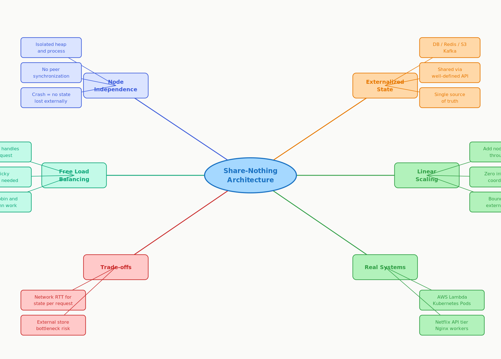

3.6 Share-Nothing
Architecture
01 Goal of This Subtopic
- Be able to define share-nothing precisely and identify what resources nodes are forbidden from sharing with their peers.
- Be able to audit a given architecture and spot share-nothing violations — shared memory, shared disk, sticky sessions — and propose the correct externalization fix for each.
- Understand how share-nothing enables free load balancing, zero-downtime deployments, and fault isolation — and articulate this cleanly in an interview.
- Be able to explain the primary cost of share-nothing (network round-trips for state) and the standard mitigation strategies.
02 What Mastery Looks Like
- Can explain share-nothing in one sentence and correctly state what a node is forbidden from sharing with its peers.
- Can identify share-nothing violations in a given architecture diagram and propose the correct externalization fix for each.
- Can explain why share-nothing enables free load balancing while shared-state requires sticky sessions or replication — and why each of those is operationally painful at scale.
- Can name three real-world systems built on share-nothing and describe concretely how each applies it.
- Can articulate the primary cost of share-nothing (external store latency and increased load) and the standard mitigation strategies with their trade-offs.
03 Study Phases to Achieve Mastery
Goal: Read deeply enough that you could explain the concept without the doc.
- Read Michael Stonebraker, "The Case for Shared Nothing" (1986) — IEEE Database Engineering Bulletin; the original paper that defined the concept
- Read Designing Data-Intensive Applications — Ch. 1: Reliable, Scalable, and Maintainable Applications (Kleppmann)
- Read AWS Architecture Whitepaper — "Building Scalable, Reliable Applications" — share-nothing patterns section
- Read Sections 5–9 (Core Definition → How It Works) carefully — don't skim
- Re-read the Cheatsheet (Section 4) and recite from memory after
Goal: Reproduce the knowledge in your own words without looking.
- Close the doc — write out the Core Definition from memory, then compare
- Explain First Principles out loud — what problem did sticky sessions create, and why did share-nothing solve it?
- Reconstruct the How It Works mechanics step by step from memory (happy path, failure, scale-out event)
- Restate each Trade-off row in your own words — if you can't explain the cost, you don't own it yet
Goal: Connect to real systems and simulate interview scenarios.
- Go through Real-World System Examples — verify each claim independently and add anything missed to My Notes
- Practice the Interview Application out loud — trigger phrases + trade-off statement verbatim
- Work through Common Misconceptions — explain WHY each is wrong, not just that it is
- Trace the Relationships to Other Concepts without looking
Goal: Confirm you actually own it, not just recognize it.
- Answer every Self-Check Quiz question out loud without notes
- Recite the Cheatsheet from memory — if you can't, re-do Phase 2
- Tick off Mastery items — only if you can demonstrate on demand, not just if it sounds familiar
- Teach this concept for 2 minutes to an imaginary interviewer without hesitation or notes
04 Cheatsheet

05 Core Definition
06 Core Concepts
External Store as the Single Source of Truth
The external store IS the intentionally shared component. By concentrating all sharing into one well-defined component — the database or cache — you decouple the scaling of the compute tier from the scaling of the state tier. The DB can be independently replicated, sharded, or cached. This separation of concerns is the architectural payoff of share-nothing.
07 First Principles — Why Does This Exist?
Before share-nothing, the natural instinct was to store session and computation state in server memory — it is fast, close, and easy to program. The problem emerged at scale: when you have 3 servers, a user who logged in on server A holds their session in server A's heap. If the load balancer routes their next request to server B, server B has no idea who they are — authentication fails.
The "fixes" introduced new problems. Sticky sessions (pin each user to one server) meant the load balancer lost the freedom to redistribute load around failures — if server A dies, that user's session is gone. Session replication (copy session state to all peers) added O(N²) synchronization traffic as cluster size grew, and kept all nodes in consensus about every session — effectively turning the cluster into a distributed shared-memory system with all the associated coordination complexity.
Both approaches made horizontal scaling operationally painful and architecturally fragile. Michael Stonebraker articulated the share-nothing alternative in 1986: instead of replicating state across nodes, externalize it entirely. Move all state to a database that every node can access independently. The nodes then become identical and interchangeable — like CPUs in a processor array — and adding a node is as simple as spinning up a new one and pointing it at the database.
08 Mental Models
Model 1: The Restaurant Whiteboard
Imagine a busy restaurant where waiters take orders but instead of memorizing each table's order in their heads, they always write it on a central whiteboard. Any waiter can serve any table at any time because the information is never locked inside one person's memory — it is on the board. Share-nothing works the same way: the "whiteboard" is the external database. Nodes are interchangeable waiters. Breaks down when: the whiteboard becomes the bottleneck — under high write load the DB slows, and more waiters don't help if the board is always congested.
Model 2: Identical Lego Bricks
In a share-nothing system, every application server is identical and interchangeable — like standard Lego bricks of the same type. You can add as many as you need to the pile and they snap together seamlessly. Compare to a hand-crafted piece where one node holds a unique shard of session data: that piece is irreplaceable and cannot be freely swapped. Share-nothing makes your servers fungible — operationally, this is the superpower. Breaks down when: the base plate (the external store) has a fixed size — you still need to scale the DB separately.
Model 3: The Stateless Vending Machine
A vending machine does not care who was there before you. Drop in your money, make your selection, get your snack. No login required, no memory of prior customers, no affinity to a specific machine. Every node in a share-nothing system operates identically: receive request → fetch required state from external store → compute → write result back → return response → forget everything. The next request goes to whichever node is available. Breaks down when: fetching state from the external store on every request adds measurable latency — unlike a vending machine, the "snack inventory" is not in the machine, it is in a warehouse across the network.
09 How It Works — Mechanics
Happy Path — Normal Request
- 1Client sends an HTTP request to a load balancer.
- 2Load balancer selects any available node (round robin, least connections, etc.) — any node works equally.
- 3Node receives the request and holds no prior context for this user in memory.
- 4Node reads required state from external store:
SELECTfrom DB,GETfrom Redis,GetObjectfrom S3. - 5Node executes business logic entirely in its own local memory using the fetched state.
- 6Node writes state changes to the external store:
UPDATE/INSERTinto DB,SETin Redis. - 7Node returns the HTTP response. Local memory is garbage collected — no residue remains on the node.
Failure Path — Node Crashes Mid-Request
- 1Node crashes between step 4 (read) and step 6 (write). External store is unchanged or transaction rolled back.
- 2Client times out. Load balancer routes retry to any other available node.
- 3New node fetches state independently from the external store and processes the request.
- 4No session state is orphaned on the crashed node — there was none. Recovery is transparent.
Scale-Out Event — Adding a Node
- 1A new node is provisioned (container, VM, Lambda cold start). No data migration is required.
- 2Node starts its process. No notification sent to existing peers.
- 3Load balancer detects the new node passes health checks and adds it to the pool.
- 4New node immediately starts receiving requests, reading state from the same external store as all other nodes.
The Latency Trade-off
10 Real-World System Examples
| System | How Share-Nothing Applies | Notes |
|---|---|---|
| AWS Lambda | Each invocation is fully isolated — no shared memory between invocations or concurrent executions; persistent state must live in DynamoDB, S3, SQS, or other external stores | Pure share-nothing by construction — the execution environment is destroyed after each invocation. Local disk (/tmp) is ephemeral and not shared |
| Kubernetes Pods | Pods are ephemeral and designed to be stateless; any pod replica can serve any request; persistent state is offloaded to PersistentVolumeClaims or external databases | Kubernetes pod scheduling assumes pods are interchangeable — share-nothing is the prerequisite for this assumption. Stateful workloads use StatefulSets explicitly |
| Netflix API Tier | Stateless microservices behind load balancers; all session and user state in Cassandra, EVCache (Netflix's Memcached), and S3; any instance serves any request | Netflix's "active-active" multi-region architecture is only possible because nodes share nothing locally; global state lives in geo-replicated stores |
| Nginx / Apache Workers | Each worker process handles requests independently with no inter-worker shared memory; sessions externalized to Redis or Memcached | The canonical web tier pattern — share-nothing at the web server level has been standard practice since the early 2000s |
| Google App Engine (Standard) | Stateless request handlers; all storage in Datastore, Cloud SQL, or GCS; local file system writes are blocked by the platform | App Engine enforces share-nothing at the platform level — it is not a convention but a hard constraint. This is why GAE applications scale elastically without configuration |
11 Trade-offs
| Benefit | Cost / Limitation |
|---|---|
| Linear horizontal scalability — add nodes, get proportional throughput increase | Every state read/write requires a network round-trip to the external store (0.5–10 ms vs. nanoseconds in-process) |
| Any node handles any request — load balancer routes freely without sticky sessions | External store becomes the new bottleneck under high write load — the scaling problem is shifted, not eliminated |
| Fault isolation — crashing one node affects only its in-flight requests; no state is orphaned | Local computation context must be reconstructed from external state on every request — increases per-request work and cost |
| Zero-downtime deployments — drain old nodes, add new ones; no session migration required | In-process caching to mitigate latency re-introduces cache invalidation complexity and potential stale reads |
| Identical, interchangeable nodes — operationally simple to monitor, replace, and auto-scale | External store must itself be highly available and scalable — you now have a critical single dependency that requires its own HA design |
12 Interview Application
When an Interviewer Asks / Says
- "How would you scale this service to handle 10× the traffic?"
- "What happens to user sessions if a server crashes?"
- "How do you deploy a new version without downtime?"
- "Why doesn't adding more servers require migrating any data?"
What You Say / Do
Introduce share-nothing during the high-level design or scalability deep-dive phase. State explicitly that each API server is stateless — it holds no in-process session data — and that all persistent state lives in Redis and the database. Then connect this to the load balancing freedom it enables: any server can handle any request, so scaling is purely additive. Name the external store you're using and why (Redis for sessions and hot data, DB for durable state, S3 for blobs).
Trade-off Statement — Memorize This
13 Common Misconceptions & Gotchas
14 Relationships to Other Concepts
| Relationship | Concept | How |
|---|---|---|
| Builds on | 3.1 Stateless vs. Stateful Architecture; 3.3 Externalizing State to Redis | Share-nothing is the architectural operationalization of statelessness. Externalizing state to Redis (3.3) is the primary mechanism for achieving share-nothing compliance at the session and hot-data layer |
| Enables | 3.7 Horizontal Scaling of Stateless Tiers; Topic 4 Load Balancing | Share-nothing is the prerequisite for horizontal scaling — you cannot freely scale a tier that shares in-process state. Load balancing algorithms only work without sticky sessions when nodes share nothing |
| Tension with | Topic 5.8 Multi-Level Caching (local in-process caches) | Local in-process caches improve read performance significantly but introduce stale-read risk and invalidation complexity. Maximizing share-nothing compliance (fetch from external store on every request) and maximizing cache performance are in direct tension |